Ratatouille
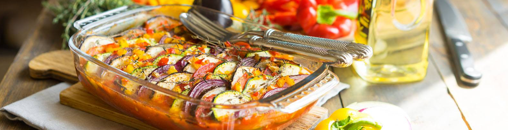When I was not very good at cooking, I thought that ratatouille was the name of a cartoon. Now I understand that not only. It is impossible to say when, who and how invented this dish, as well as which recipe is the most correct and authentic. Yes, this is not required. The whole point of ratatouille is rather that we take seasonal vegetables and bake them in the oven, retaining their beneficial properties, but getting a fragrant dish with an interesting texture. If you look on the Internet, then ratatouille is often prepared in two ways: carefully laying out slices of vegetables in a form or preparing vegetable stew by chopping vegetables into a cube. But not everyone knows that a juicy sauce should be hidden under this beautiful vegetable layer, which makes the dish even more fragrant, tasty and interesting. And if you have a piece of baguette, then you can blot it, but that's a completely different story. There are no hard and fast rules about which vegetables to use and in what proportions. You can take whatever you like.
Interesting: Ratatouille (French ratatouille; from “rata” - colloquial food and Ch. “touiller” - interfere, stir) is a traditional vegetable dish of Provencal cuisine made from peppers, eggplants and zucchini, in many ways similar to the Hungarian lecho.
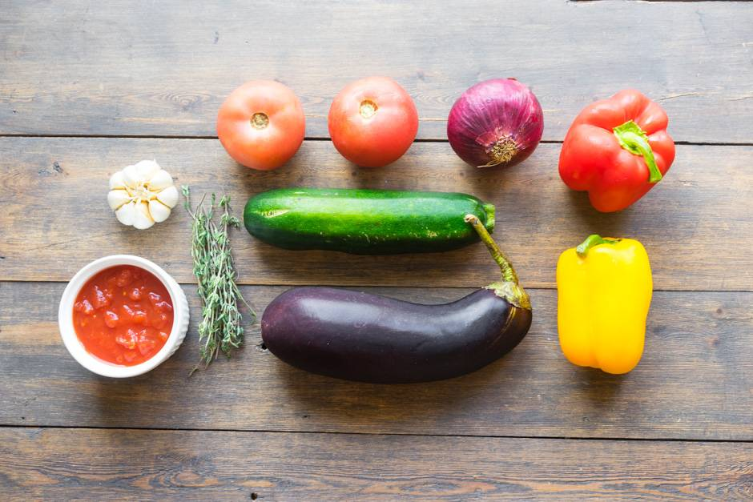First you need to wash all the vegetables and cut into thin slices, no more than 2-3 mm thick. You can use a grater with a special nozzle or a combine, so things will go faster. We cut the red onion. You can take a regular onion, but it is not so fragrant and sweet.
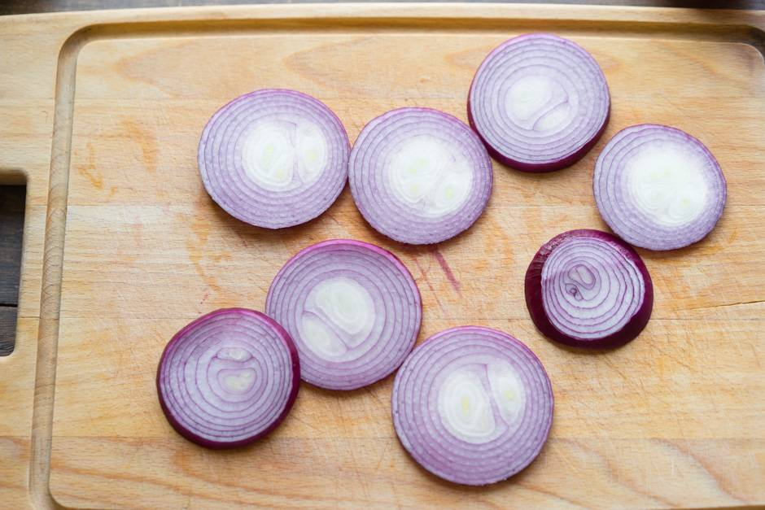Next is the zucchini.
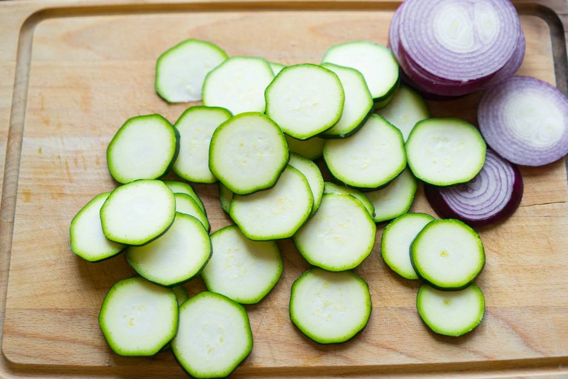Eggplant.
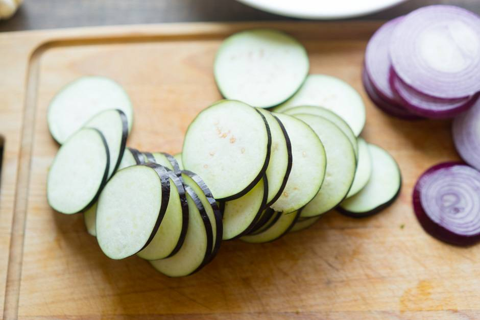Tomatoes can be cut a little thicker because they are softer and cook faster than the same eggplant.
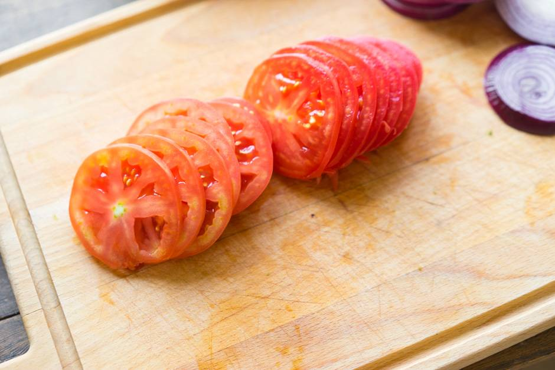Cut the bell pepper thinly and then cut into cubes. Also finely chop 2-3 cloves of garlic.
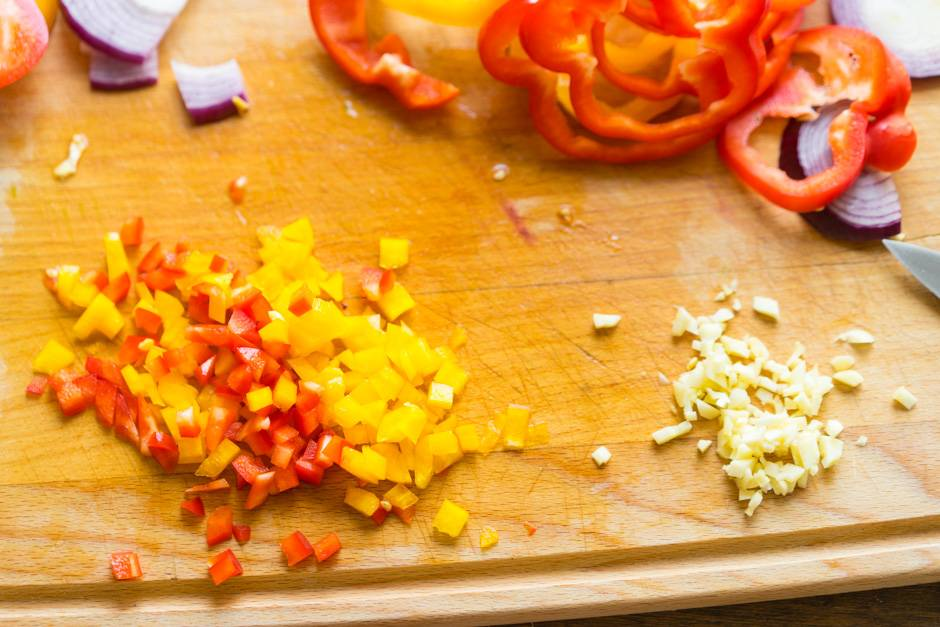Take whatever shape you like best. Of course, it is better to serve in a beautiful ceramic form, but metal or even silicone will also do. This amount of vegetables is enough for a 25x25 cm form. Pour a couple of tablespoons of vegetable oil.
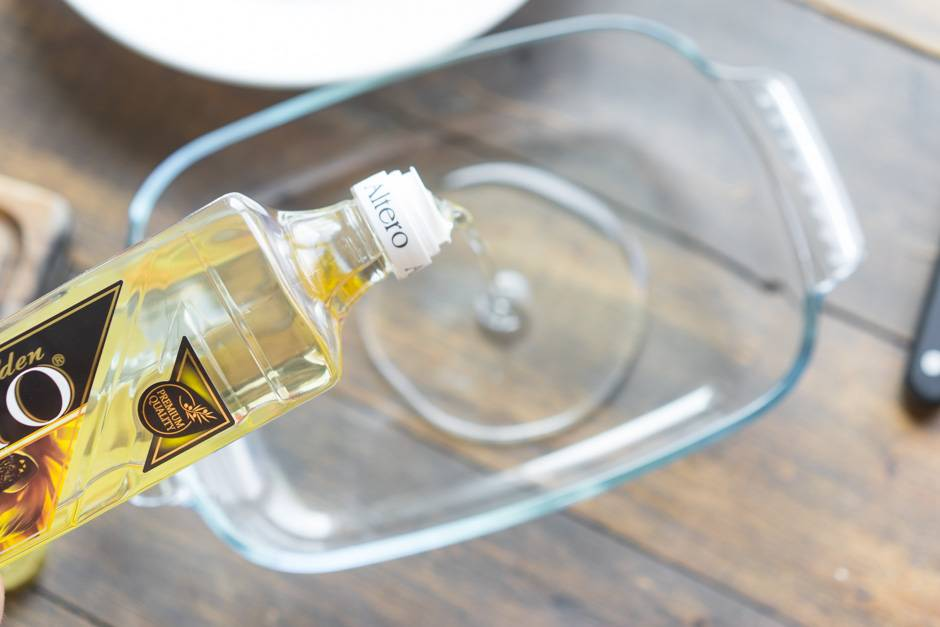Then lay out an even layer of 1 cm tomatoes in their own juice. Ideally, if they are already diced, if not, break them up with a spatula. Instead of tomatoes from a jar, you can use lecho, squash or eggplant caviar, as well as any other thick sauce of your choice. Salt, pepper and mix well with a fork.
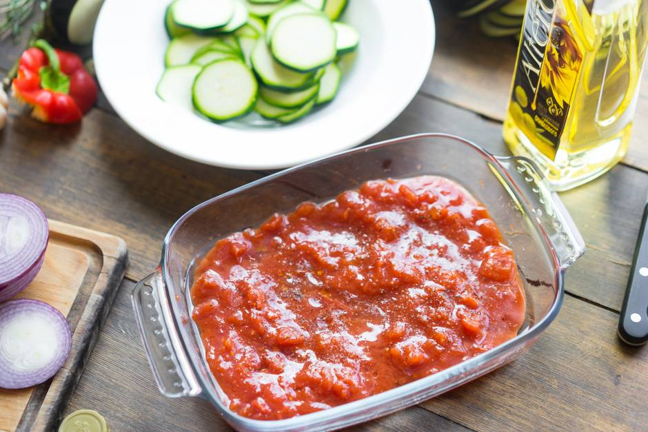Now start laying out slices of vegetables in layers. The order doesn't matter here. The main thing is to insert the slices into the sauce at an angle. As a result, we will get a "scale".
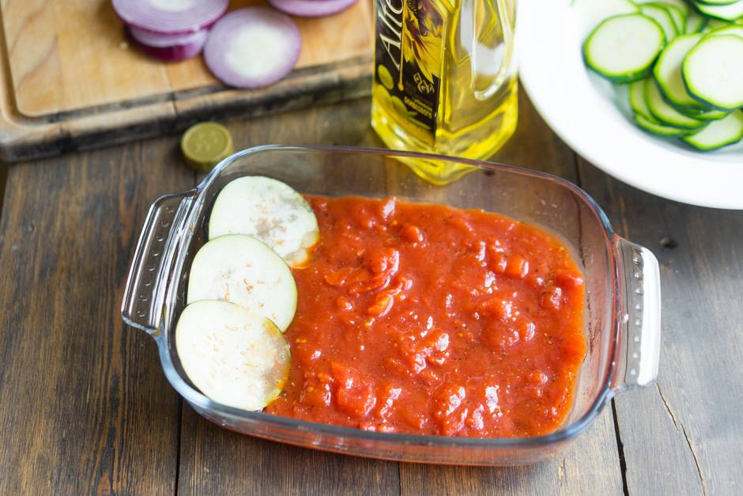If the shape is round, you can spread the vegetables around the perimeter.
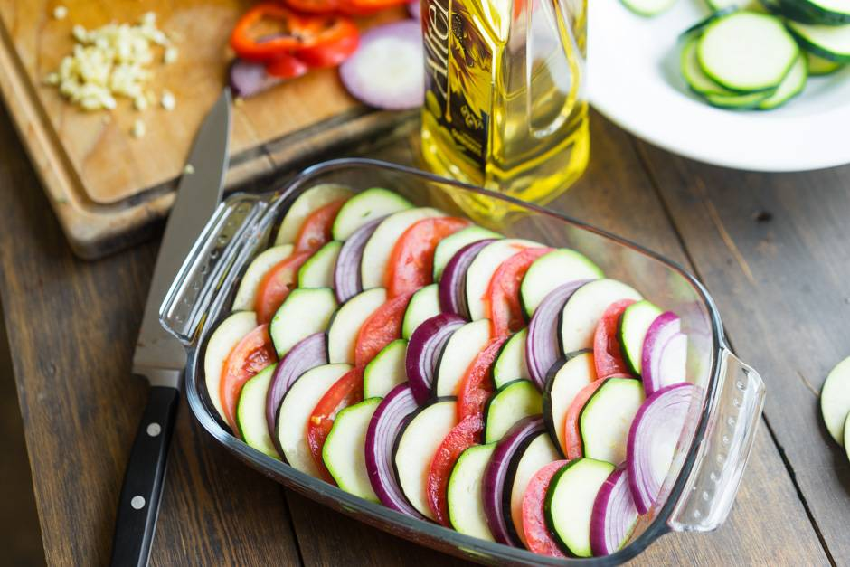Spray on top with oil. We lay out sprigs of thyme (you can take any other herb or dried spices), sprinkle with sweet pepper and garlic. You can again salt and pepper to your liking. We bake in an oven preheated to 180 degrees.
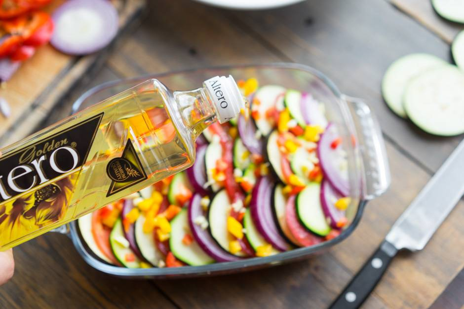 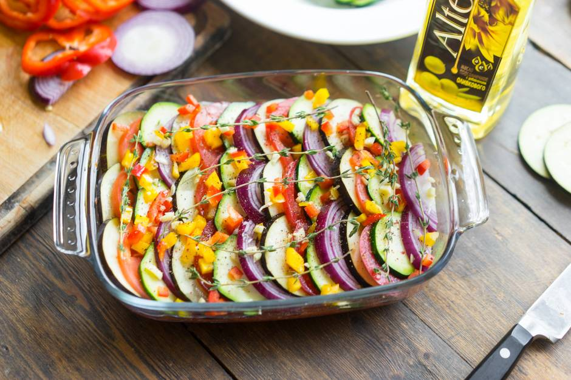Readiness is determined by the appearance of vegetables. They should not turn into mush or start to burn, but should still become soft. It took me 25 minutes.
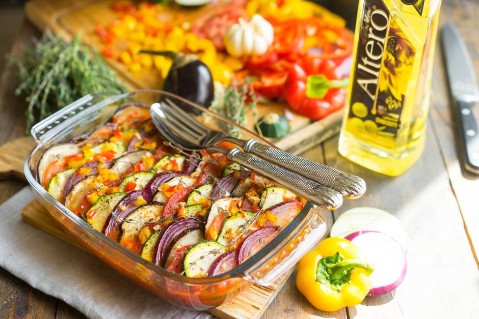Ratatouille is best served straight out of the oven. Pry the sauce underneath with a spoon.
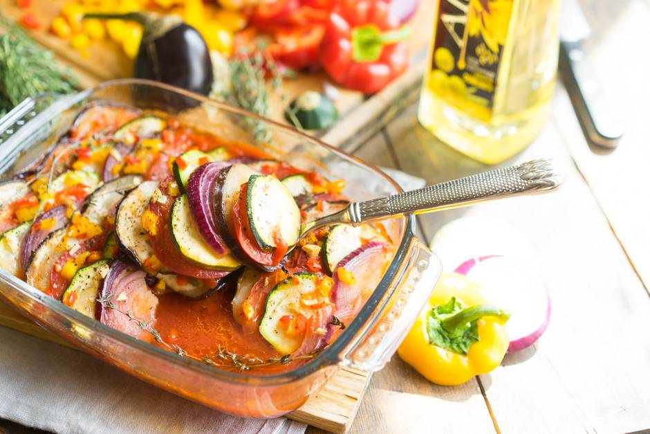